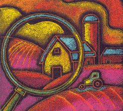
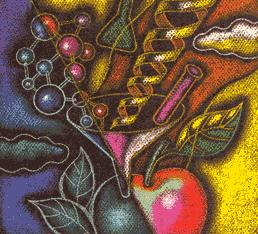

Will genetically modified
crops save us or sink us?
When members of the World Trade Organization (WTO) met in Seattle last fall to discuss global trade issues, negotiations were unexpectedly shut down by the shattering of shop windows and police in body armor. Nearly 35,000 demonstrators from around the world clogged the city's streets to protest what many saw as the closed-door politics of global food corporatism. Meanwhile, the 137 WTO delegates were there-rather skeptically by all accounts - to iron out labor issues, decision-making policy and to discuss what to do about a tense and growing international food scare: the potential dangers of genetically modified (GM) food. Instead, tear gas canisters and rubber bullets littered the streets, 400 protesters went to jail and the WTO went home stunned and empty-handed. Why? While the immediate reasons involve an arguably overzealous response to recent headlines, the root causes can be traced back to a small seacoast lab, more than a century ago.
In 1874, Luther Burbank, a 26-year-old farmer's son from Lancaster, Massachusetts, with an elementary school education, had the unprecedented idea of taking the pollen from one plant and fertilizing the fruit of another - thus creating a hybrid. He didn't know if the qualities of the male or the female, would dominate, but the experiment was an interesting gamble. In his 55 years of working with plant species, Burbank produced over 800 strains and varieties. Among these was the Burbank potato, developed to combat the devastating potato blight affecting Ireland's crop. He sold the rights to his lifesaving potato for $150.
In the 1950s, scientists began exposing seeds to X-rays, hoping to jostle the genes inside. It worked, and mutant varieties were the result. They selected from these and were able to develop some new varieties that were worthwhile, but the process was largely hit-or-miss and no less time-consuming than hybridization.
The science took a giant leap forward when the first gene was transferred between plant organisms in 1973. Such engineering involves the splicing of a gene from one organism into another. Every gene - whether of bacteria, plant or animal - codes for a specific protein. Thus, when you insert a foreign gene into an organism, you prompt that organism to produce a non-native protein, changing its basic structure at the cellular level.
Just 14 years after the initial experiment, the first genetically engineered plants were grown outdoors. By 1995, these plants were growing on commercial acreage. Today, more than half the nation's soybean crop is genetically engineered. Modified soya is now in so many foods that it is very difficult to keep it out of your shopping cart, try though you might. There is no labeling requirement. The only way you can be assured that what you eat has not been genetically engineered is to grow it yourself or to buy food that has been certified organic.
So what? Is there any reason someone should not want to eat genetically altered food? To date, nobody knows for certain, and that lack of certainty has thrown thousands of jobs, untold fortunes and the general health of billions of people into a blind trust. And trust may never again come so easily to the dinner tables of the world.
The current wave of anxiety concerning engineered food began in early 1999, when a biologist named Arpad Pusztai fed potatoes to rats in Aberdeen, Scotland.
The experiment Pusztai performed at the Rowett Research Institute was meant to test whether GM crops designed to produce an insecticide - in this case potatoes patented by the Swiss company Novartis - could be harmful or toxic to animals. He found that rats fed the GM potatoes for ten days developed intestinal deformities and seemed to have weakened immune systems compared to rats that were fed natural potatoes. Even before the experiment could be properly checked, Pusztai appeared on national television pillorying GM food, consequently handing radical environmental groups and already panicky consumers a reason to fear GM crops as a health hazard.
In retrospect, it's no coincidence that the public outcry over food safety began in Britain. It was the English, after all, who discovered BSE, or mad cow disease, in their livestock, an epidemic that has killed (or was a material reason for the killing of) more than a million head of cattle since 1991. Some 1,500 cows were destroyed because of BSE as recently as last year. Needless to say, the European public was already on edge about the safety of its food. That fear was exacerbated last year, when Belgium removed chicken from grocery store shelves after some of the meat was found to have a high content of toxic dioxin. And as if that wasn't enough, Coca Cola was forced to recall $103 million worth of Coke in Belgium after consumers complained of nausea, dizziness and headaches. Small wonder GM foods were met with resistance.
And yet what do the facts of Pusztai's experiment really show? Is ten days of feeding potatoes to rats enough evidence to condemn biotechnology altogether? Scientists in Britain point out that any normal potatoes fed to a rat for ten days would stress both its digestive and immune systems. Pusztai's study was discredited as "dubious science" by Britain's Royal Society and no other evidence has since been found to suggest that GM food is harmful to human health. Likewise, studies at Cornell University, Iowa State University and in Switzerland have come up empty on forays into the possibility that GM crops may be harmful to the environment.
Nevertheless, the European public has not wavered. By the time the WTO met in Seattle last November, the United States and the European Union were in a trade war. The EU had banned American beef treated with growth hormones, while the U.S., in retaliation, imposed 100% tariffs on certain EU foods like French truffles and British pork. Meanwhile, McDonald's restaurants in France and Belgium were vandalized and fields of modified crops in Germany were trampled.
Bowing under public pressure, the EU refused to import any more GM crops from the U.S. and Canada, thereby setting the stage for the debacle in Seattle and the latest round of talks in Montreal this past winter (see " The Biosafety Protocol "). In the space of a few months, much of the world had seen the promise and perceived danger of GM food. . . and opted out.
Globally, sales of genetically modified seed grew 20-fold between 1995 and 1998, a remarkable start out of the gate for a relatively new technology. During that time, the GM food corporations' promise of safety went unquestioned both at home and abroad. And the seed corporations enjoyed what can only be described as a cozy relationship with the U.S. governmental bodies responsible for overseeing product safety.
With the Food and Drug Administration (FDA) overseeing the nation's food supply, pesticides have to be approved by the Environmental Protection Agency (EPA) and new plant species come under the review of the Department of Agriculture (USDA). However, when genetic engineering involves breeding plants that actually kill pest insects, the line between food and insecticide is blurred. Responsibility quickly becomes confused. The regulatory response to that conundrum leaves large holes through which GM seed corporations have been jumping for years.
Consider the FDA decision in 1992: The agency would not recognize the process by which a food was developed, only its character. It said, in effect, that if a new strain of GM potato looks, smells and tastes like an ordinary potato, then its review is concluded. Any nonaesthetic modifications - the transfer into a potato of a gene from the soil bacterium, Bacillus thuringiensis (Bt), for example - would not be considered in food analyses. Bt, a natural insecticide used by many organic farmers, is already a registered pesticide in the U.S., excusing the EPA of any further obligation to review Bt crops. The USDA's responsibility is to make sure that new plant varieties pose no threat to production agriculture or to the environment during cultivation. It is enthusiastic in its support of GM plants and has said as much in numerous statements, including the following from its Animal and Plant Health Inspection Service (APHIS):
Over the past year, there has been a continuous flow of requests for determinations by APHIS that particular field-tested organisms have no potential for... risk and should no longer be regulated. These requests, from developers of new products produced through biotechnology, facilitate the entry of the products into the marketplace. Sixteen new products in seven crop plants were the subject of such determinations in the past 28 months.
Small wonder, then, that the first four years of GM seed sales were astronomical.
But increasing concern among con sumers - in Europe, Asia and more recently the U.S. - over the unknown health and environmental hazards of genetically modified organisms (GMOs) has suddenly got the biotech seed industry scrambling to assure governments, growers, food processors and the public of the safety of their products.
They look to be losing ground: Among the companies that have announced they will refuse GM crops are Cadbury and Nestle (in Europe); the Japanese brewers, Kirin and Sapporo; Mexico's largest tortilla maker, Grupo Maseca; and baby food manufacturers Gerber (which, incidentally, is owned by biotech seed giant Novartis) and H.J. Heinz. Add these to the dozens of high-profile companies that have refused GM crops from the beginning, including Eden Foods, Barbara's Bakery, Newman's Own, Bird's Eye, Ben & Jerry's, Stonyfield Farm and Horizon Organic Dairy, and the sum is a public relations nightmare. Even the U.S. pet food company Iams has said it will reject GM maize for its dog chow. But the latest blow may sting the most: In January, Frito-Lay Inc., the enormous snack food division of PepsiCo, announced that it was jumping on the GMO-free bandwagon.
Monsanto spokesman Dan Verakis was quick to note that even Frito-Lay admitted its decision was driven not by any proven health threats, but rather by consumer attitudes. He dismissed the move as evidence of what he sees as a potential "niche market for non-biotech grain, similar to the market that exists for organics" (this, despite Frito-Lay's status as mainstream snack king).
In the midst of this turmoil, the world's largest seed and agrochemical companies are pooling war chests, as mergers sweep the industry, leaving just a handful of megacorporations in charge of much of the planet's food supply (see " Follow the Money ").
While clearly the motive is profit (business is business, after all), these industry giants also claim more beneficent aims. This technology, say its proponents, will help to feed the world, while reducing the use of chemical pesticides. And, in the very near future, it could produce foods that are tastier, more nutritious and even therapeutic.
According to the United Nation's Food and Agricultural Organization (FAO), nearly 800 million people worldwide do not have enough to eat. Moreover, the global population is expected to double in the next 40 years - with the vast majority of this explosion occurring in underdeveloped, underfed nations.
"We know this means that agricultural output and production needs to increase by 70%," says Monsanto's Verakis. "And so how do we do that? Clearly, dumping more chemicals on the ground isn't the answer. I don't think many people would agree that slashing and burning the remaining rain forests is a very good approach. Frankly, biotech is not the Holy Grail either, but it has demonstrated its ability to increase yield and reduce chemicals."
But hunger, at least in today's world, seems to have little to do with food. Global production systems currently produce the equivalent of roughly four pounds of food daily for every man, woman and child on the planet. So why are so many starving?
The FAO identifies poverty and marginalization as the root causes of hunger in nations at peace, while, predictably, physical destruction and displacement of people perpetuate hunger in nations at war.
"Feeding the world is not a technology-related problem," says Jane Rissler, senior staff scientist with the Union of Concerned Scientists (UCS), a 50,000-member, nonprofit watchdog group concerned with the misuse of science and technology. "It is a problem of wealth and distribution of wealth. It is a problem of politics. Having a new technology guarantees very little in the face of poverty."
Rissler suggests that the industry is not just misguided, but duplicitous: "If these companies do want to feed the world, then why are they trying to sell genetically engineered crops in the U.S. and Europe? That is not feeding the world. These companies are trying to play on our guilt feelings by convincing us that if we don't buy this technology and make it a success, somehow the world will not get fed. It's a public relations ploy."
As evidence, Rissler points to the fact that, with the exception of rice, the inexpensive staple and subsistence crops so important to Third World farmers are hardly on the minds of the megacorporations. "There is not," she observes, "a great rush to develop products for the developing world."
To be fair, Monsanto for one did open its St. Louis laboratories to two Kenyan researchers, whose efforts there produced a genetically modified sweet potato resistant to the feathery mottle virus. (Sweet potatoes are among the world's most important subsistence crops.) According to Verakis, Monsanto "gave away the technology" and has "no commercial interest" in the product.
Monsanto and the other biotech giants do, however, maintain a very definite comrnercial interest in the world's major cash crops - cotton, corn, wheat, soy - to the extent that they've made seed-saving criminal, compelling farmers to purchase a supply annually. Critics worry that the high cost of biotech seed, combined with shrinking alternatives, may force poor farmers worldwide out of business.
Even as Greenpeace and other environmental groups continue to staunchly oppose GMOs, the industry holds fast to its claim of a "green" agenda. Bioengineered seed, say its boosters, will decrease the use of herbicides and pesticides, while increasing per-acre yields. Monsanto's Verakis points for example to cotton farmers, who he says can substantially reduce their pesticide use by switching to Bt cotton, which protects against the bollworm. "Instead of spraying ten or 12 times, farmers who plant our Bt cotton are now spraying only once or twice, depending on the size of the infestation," says Verakis. "In much the same way a silicon chip in a computer is replacing huge roomfuls of information, we are putting information in a seed, and that gene, that DNA, replaces tankers full of pesticides and other chemicals."
But are bioengineered seeds living up to their promise? In 1999, genetically modified crops were grown on some 73 million acres in the U.S., roughly a fifth of the nation's total cropland. Yet definitive evidence of corresponding pesticide reductions is hard to come by.
The USDA compared GM to non-GM plantings in terms of both pesticide use and crop yields (using 1997 figures), but cautions that its results are imperfect, since differences may be attributable to such factors as weather, soil conditions, irrigation, pest pressures and production practices. Nevertheless, the department was able to draw some general conclusions - chiefly that the impact of GMOs varies considerably depending on the crop and the technology. In some cases, yields increased while pesticide use decreased (where, for example, farmers planted Bt cotton or herbicide-tolerant soy), but there is also evidence that her bicide use may have increased in some areas planted with herbicide-tolerant seed. (Such seed enables farmers plagued by weeds to spray with abandon, without endangering their crops.)
"This is not a slam dunk," says the UCS's Rissler. "One cannot conclude that this technology has been proven to increase yield or to substantially reduce pesticide use across the board. So our question is: With so little benefit, why are farmers and consumers being asked to take any risk?"
While so far no human health scare has been linked to GMOs, concerns that "Frankenfood" could harm life or limb have consumers worldwide worried.
Fueling the frenzy are misleading accounts of cross-species experiments (see " Fish Stories ") and at least one highly publicized near-miss involving a Brazil nut gene spliced into a soybean; researchers discovered that people allergic to Brazil nuts would also be allergic to the modified soy and the product was pulled from development before it went commercial - but not before it raised real doubts about the safety of bioengineered foods.
Critics further worry about the introduction into our food supply of genes and thus proteins from bacteria and other nonfood organisms. The fear is that these novel proteins could prove allergenic or even toxic.
But biotech proponents argue that the Brazil nut incident actually bolsters industry safety claims, since the danger was identified and the project killed well before it might have become a public health risk. Monsanto spokesman Verakis says his company tests its products ad nauseam: "The director of our regulatory and safety division has calculated that the number of person hours his team has devoted to safety testing of biotech crops ...together adds up to more than 400 years."
But critics caution that laboratory results cannot predict every eventuality (witness the number of prescription drugs that pass 12 years of clinical trials only to later be pulled from the shelves).
"There hasn't been enough research done," says the UCS's Rissler. "We are not building a database of information; this food is not labeled so we can't follow its effects. We may have already had people who have gotten sick from it, and we just don't know about it .... If you don't look, you don't see risk. And that's pretty much where we have been in this country. We don't look and so therefore we have not found."
Already complicated, the debate over genetically modified food is about to get more difficult. While both sides may convincingly argue over herbicide-tolerant or pest-resistant crops, it gets tougher to oppose foods that may improve nutrition or medicine for millions.
Globally, health-care delivery systems are overtaxed, and advanced practices and pharmaceuticals remain beyond the reach of much of the world. Verakis suggests that foods bioengineered to deliver important nutrients or drugs could prove a significantly less expensive, more practical way to fight malnutrition and disease on a global scale. His company is working to engineer healthier cooking oils that will help to lower cholesterol, as well as a canola oil high in beta carotene (the precursor to vitamin A).
And Monsanto is not alone: Earlier this year, "golden rice" - a product engineered by Swiss researchers to contain high levels of beta carotene - made headlines as the next best hope for the 124 million children in Southeast Asia and elsewhere who are deficient in vitamin A, a quarter million of whom go blind annually,
But despite its seeming promise, UCS's Rissler isn't sold on the rice: "It hasn't been proven outside of the laboratory, in the fields. It's not clear that people will buy yellow rice [golden rice has a decidedly unnatural hue]. It's not clear what will happen when people cook the rice. There are a lot of unknowns, yet the industry just jumped right on that golden rice, hoping to ride that little board through some pretty big waves, because they really needed some good news.
"The industry," she adds, "is always criticizing people who talk about risk, saying it is all conjectural, lout many of their benefit statements are also conjectural."
For his part, Verakis would like to see an end to the criticisms from both sides, and the beginning of real discussion: "What we are pushing for is a proper dialogue" about GMOs, he says. "But if, at the end of the day, you can't acknowledge the benefits of biotechnology, there is no room for dialogue. And likewise, if you can't acknowledge that people have concerns about biotech, there is also no room for dialogue."
As with many controversies Surrounding food production in the last century (the first plant hybrids commercially introduced in the 1930s and the Alar apple scandal spring to mind), the biggest burdens of the GMO battle will fall upon farmers. Combines and trucks are running on fuel that continues to skyrocket in price, food surpluses have been driving crop values lower, and now farmers are forced to contend with an increasingly unpredictable marketplace. In the short-term, nearly all that GM crops have accomplished on the farm is to make planting a juggling act, with a family's security hanging in the balance. Gary Goldberg, president of the Tulsa, Oklahoma-based American Corn Growers Association (ALGA), has been fielding reports from farmers and comparing GM crop yield results since the plants first appeared in the fields of North America.
"If the promise of GM plants, in our instance corn, is that they will boost yields for the farmer, then we can do without them. We already have lost $200 trillion in sales last year because the European Community and others have refused our corn. And this happened when we already had a corn surplus. We can't afford to see prices drop any further but they might."
Goldberg goes on to say that even a well-intentioned move away from GM crops carries its own risks.
"The biggest threat facing farmers right now," he reports. "is the marketplace. Every farmer growing corn has to wonder if his crop will be sellable by the end of the year. In this kind of incredibly volatile market ...in which Seagram's suddenly refuses to accept GM crops, in which Heinz and Gerber baby foods, Iams and Frito-Lay do the same ...well, there's no way for a farmer to really plan. It's making a difficult business much more so."
And as if the threat of a continually dwindling national and international marketplace isn't enough, Goldberg sees a legal battle looming on the horizon. "Say an organic farmer's land is next to that of a farmer who plants GM crops, and GM pollen drifts onto the neighbor's land. Well, now that organic farmer is out of business because he can no longer guarantee pure food. We will have farmer suing farmer, neighbor suing neighbor."
As for the safety and reliability of the GM seed and finished crops, the ACGA is more pragmatic than fearful. Goldberg explains: "Genetic modification of crops is a tool, nothing more. If it can boost nutrition and help grow better crops, then full-speed. Of course we want complete safety assurances, but our primary job is to get better food on the table. If GM helps ...great."
Bob Cannard of Cannard Farms in Sonoma, California, a longtime proponent of sustainable agriculture and an outspoken critic of GMOs, sees repercussions in "enhanced" food more serious than even bankrupt farmers.
"In a few years," Cannard warns, "all the food varieties and all the plant varieties we have selected and bred for thousands of years, lovingly, scientifically, will be thrown away if the current trend continues. And for what? For plants that resist pests they'd be able to resist already if we grew better commercially?"
Cannard sees GM proliferation as both a complex and dangerous solution to a simple problem. "Healthy plants grow well, grow in abundance and largely don't need pesticides ...something that every sustainable farmer and organic grower will tell you. Take corn for instance. It honestly isn't one of my big crops here, but as an experiment, I planted two pounds of Iroquois white corn seed, which produced about 4,000 ears. The corn grew beautifully with minimal attention, and when I picked through the ears, I found not one corn borer [the pests that genetically modified Bt corn is designed to fight]. It's not a scientifically complete test," allows Cannard, "but it helps prove that well-fed and healthily maintained plants require few pesticides - much less genetic engineering, which warps their structure forever."
When asked what he makes of the GM seed corporations' assertions that billions of dollars have been devoted to ensuring that modified seed is perfectly safe, Mr. Cannard counters: "Any scientist will tell you that mammalian testing requires at least three generations of observation and study. Which means that any allergies or other physiological problems will manifest themselves most probably in the third generation from ours - our grandchildren. But there won't be any non-GM seed to revert to by then. Farmers are having a tough time getting hold of traditional hybrids even now."
Most voices in the community of food producers are not as strident as Cannard's, but the majority of farmers seem to be concerned equally about the quality, safety and sellability of the food they grow. Mort Mather, a longtime MOTHER contributor and organic grower, sees profitable possibilities in this concern and hopes for an increasingly robust non-GM marketplace. "These seed corporations leave behind many niche markets where farmers can sell directly or nearly directly to consumers. As con sumers learn more about genetic engineering and some of the problems that come with globalization of the food industry, the demand for locally grown food increases. More and more people want to have a face attached to their food or to see some label indicating the food is certified to meet some strict standard."
But at the same time that GM crops may ease open new markets for organic products, they could also make life much more difficult for organic growers, warns Mather. "Now that Bt is in a very large proportion of corn, potatoes and cotton, it is a certainty that pest insects will build up a tolerance," he predicts. "Even the scientists who did the genetic engineering agree that this will happen! They have said that these crops should be planted with a buffer [a border of non-GM crops around the much larger GM field] so that insects that get a nonlethal dose will mate with insects from the buffer and somehow this will delay the inevitable a few years. Well, the farmers aren't leaving the buffers - and the seed companies don't care. The USDA doesn't care. The EPA doesn't care. And the gene companies are telling us not to worry, that they will find something to replace Bt once it becomes ineffective.
"Which is more troubling," wonders Mather, "what they come up with next or the possibility that they will destroy a safe insecticide and not find a replacement? Either way they will make organic farming more difficult and expensive. That's one way to hurt the competition."
Even the most impassioned pleas for more caution in the proliferation of seed may fall on deaf ears here at home, according to Thomas Hoban, a professor of sociology at North Carolina State University and a longtime tracker of social awareness of food issues. "About one in three people in the U.S. are aware of the GM food controversy. This compared to, say, the U.K., where 90% or better of the general public is aware." The discrepancy is attributable to a variety of factors according to Hoban, chief among them a generally enthusiastic European press corps, keen to report on every turn in the biotechnology road.
The second factor is faith. "The public trusts the USDA and the FDA to care for the food supply, period. There is no single regulatory voice in Europe anything like those two organizations, and so, for better or worse, it leaves each country to come to its own conclusion."
In the final analysis, Hoban suggests that we might simply be too busy to worry about possibly imaginary food dangers. "To Americans, taste comes first on a wish list, then nutrition; the mechanics of food production are a distant third."
Until we can make our own decisions on GM crops and products by reading labels on tomato sauce cans and bread bags, genetic experiments will continue to either the benefit or the detriment of ourselves and or ecosystems. As a result, there will almost certainly be more genetic changes in the next millennium than there have been in the previous twenty. Some will be intended, others not. Will any be cataclysmic? Will these changes put our species at risk or will they herald a new age of boundless agricultural productivity? At the very least, it's worth more than just a few moments of this kind of consideration before we meddle with the genetic blueprints holding our planet together.
Related info:
Follow The Money
Congress Steps In
The Biosafety Protocol
Fish Stories
|
|
 |
 |